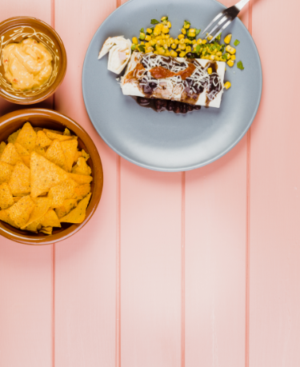
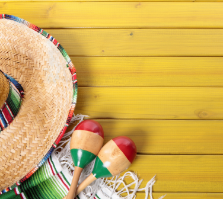

MexiCool
conheça o elixir do carpe diem mexicanoA cultura mexicana reflete a complexidade da história do país através da mistura das civilizações pré-hispânicas e da cultura da Espanha, transmitida durante a colonização de 300 anos da Espanha no México. Elementos culturais exógenos, principalmente dos Estados Unidos foram incorporadas à cultura mexicana
Embora tenha muita influência indígena, a cozinha mexicana foi praticamente estabelecida durante a colonização espanhola.
A era Porfiriana (el Porfiriato), no final do século XIX e primeira década do século XX, foi marcada pelo progresso econômico e pela paz. Após quatro décadas de conflito civil e guerra, o México assistiu ao desenvolvimento da filosofia e das artes, promovida pelo presidente Díaz. Desde aquele tempo, tão acentuado durante a Revolução Mexicana, a identidade cultural teve sua fundação na mestiçagem, cujo elemento é o núcleo indígena.
À luz das diversas etnias que formaram o povo mexicano, José Vasconcelos, em sua publicação "La Raza Cósmica" ("A Raça Cósmica") (1925) definiu o México como um caldeirão de todas as raças (alargando assim a definição do mestiço), não apenas biologicamente mas culturalmente também.[182] Esta exaltação da mestiçagem era uma ideia revolucionária que contrastava fortemente com a ideia de uma raça superior pura predominante na Europa na época.
"A arte pós-revolucionária no México, a sua expressão tinha nas obras de artistas renomados como Frida Kahlo, Diego Rivera, José Orozco, Rufino Tamayo, Federico Cantú Garza, David Siqueiros e Juan O'Gorman."
- Xel-Há
- Cobá
- Tulun
- Museu Frida Kahlo
- Xcaret
- Palenque
A literatura do México inicia-se antes da chegada dos colonizadores europeus, com a produção literária nos assentamentos indígenas da Mesoamérica. O poeta mexicano pré-colombiano mais conhecido é Nezahualcóyotl. A literatura moderna mexicana foi influenciada pelos conceitos da colonização espanhola da América Central. Escritores e poetas coloniais proeminentes incluem Juan Ruiz de Alarcón e Juana Inés de la Cruz.